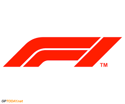

Formule 1, officieel de FIA Formula One World Championship, is de hoogste klasse in het formuleracen. Deze tak van autosport betreft het racen in speciaal voor dit doel
ontwikkelde auto's met open wielkasten.[1] Formule 1 wordt meer algemeen tevens gezien als de hoogste klasse in de autosport. Het eerste wereldkampioenschap werd verreden
in 1950. In de loop van de jaren ontwikkelde de sport zich op technologisch vlak en werden diverse vernieuwingen in het racen geïntroduceerd waaronder vleugels, de zogenaamde
wing car en de turbomotor. Sommige van deze ontwikkelingen brachten de veiligheid in het gedrang waardoor zij verboden werden. Ook in het kader van veiligheid waren er
ontwikkelingen als de monocoque, het Head and Neck Support system en de Halo, een beschermbeugel over de cockpit. De ontwikkelingen dreven de kosten op tot grote hoogten.
Lewis Hamilton en Michael Schumacher worden tot de succesvolste coureurs gerekend. Zij hebben op het moment van maken (december 2021) beiden zeven wereldkampioenschappen
gewonnen. Gedurende de geschiedenis hebben zeven vrouwen als coureur deelgenomen aan de Formule 1.
Per race worden er 102 punten verdeeld. Dat gaat als volgt:
- Nummer 1: 25 punten
- Nummer 2: 18 punten
- Nummer 3: 15 punten
- Nummer 4: 12 punten
- Nummer 5: 10 punten
- Nummer 6: 8 punten
- Nummer 7: 6 punten
- Nummer 8: 4 punten
- Nummer 9: 2 punten
- Nummer 10: 1 punt
Formule 1 is de hoogste klasse in de autosport in het algemeen en in de formuleracing in het bijzonder onder organisatie van de
Fédération Internationale de l'Automobile. De sport staat aan de technologische top van alle autosport.[1]. Formule 1-auto's bereiken (variërend per circuit) snelheden tot ruim boven de 300 km/h
waarbij de turbomotor tot 15.000 toeren per minuut (tpm) begrensd is. De motoren kunnen nog hogere toerentallen bereiken, maar dit is niet toegestaan. In de auto's kan de zijwaartse versnelling in
de bochten oplopen tot meer dan 5 g. De prestaties van de auto's zijn in sterke mate afhankelijk van elektronica (hoewel tractiecontrole en andere coureursondersteuning verboden zijn), aerodynamica,
ophanging en banden.
Het Formule 1-seizoen bestaat uit een serie races, een individuele race wordt "Grand Prix" genoemd. De race wordt verreden op gespecialiseerde circuits en in mindere mate ook op afgesloten stratencircuits.
De resultaten van elke race worden gebruikt om ieder jaar twee wereldkampioenen te bepalen: een voor de coureurs en een voor de constructeurs. Zowel coureurs als constructeurs moeten in het bezit zijn van
een superlicentie, de hoogste racelicentie die wordt uitgegeven door de FIA.
Europa is het traditionele centrum van de Formule 1 waar (vrijwel) alle teams hun basis hebben en waar ongeveer de helft van alle races wordt gehouden. Het bereik van de Formule 1 is de afgelopen jaren
sterk uitgebreid en Grands Prix worden over de hele wereld gehouden. Enkele races in Europa en Amerika zijn vervallen ten gunste van Azië en het Midden-Oosten. In 2009 werden negen van de achttien races
buiten Europa gehouden.
Formule 1 is een zeer groot televisie-evenement waar door miljoenen mensen naar gekeken wordt. De Formula One Group, is de houder van de commerciële rechten. Als de duurste sport ter wereld kunnen de
economische effecten significant zijn en worden interne politieke en financiële debatten vaak op de voet gevolgd door de media. Er kijken wereldwijd miljoenen mensen live naar de races, wat de constructeurs
vervolgens hoge commerciële sponsorcontracten oplevert.
In september 2016 nam Liberty Media een meerderheid van 18,7 procent van de aandelen in de Formula One Group in bezit; voor 7 miljard Euro nam het eigendom over van private-equity-investeerder CVC Capital
Partners dat sinds 2005 de meerderheid van de aandelen bezat. Ook Ecclestone verkocht zijn belang van 5,3 procent aan Liberty Media. De familiehoudstermaatschappij Bambino Trust verkoopt ook haar belang
van 8,5 procent aan Liberty Media.
Bron.